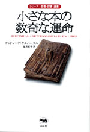
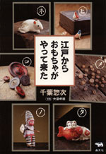
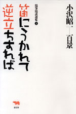

 |
外国文学・読書 | ||||||
| 愛書・探書・蔵書 小さな本の数奇な運命 |
|||||||
| アンドレーア・ケルバーケル 望月紀子訳 | |||||||
| 四六判 88頁 | |||||||
| 定価1470円 （本体1400円） | |||||||
| 4-7949-2661-8 C0397 | |||||||
| 古書の書名・著者名は不明。60数年前に出版されて三代の所有者にわたり、今は古書店の片隅に人目に留まらず置かれている本が、自らを語る。初版のその本は、人間が生きるという仕事について語られているらしい。あと一月、夏のヴァカンス前に買い手が現れなければ、リサイクルに出されるかもしれない。ショーウィンドウに飾られることもない、忘れられた作家の本が、力いっぱい、来し方、行く末をしゃべり出す。 | |||||||
 |
工芸・骨董 | ||||||
| 江戸からおもちゃがやって来た | |||||||
| 千葉惣次 | |||||||
| A5判 136頁 | |||||||
| 定価2310円（本体2200円） | |||||||
| 4-7949-6609-1 C0072 | |||||||
千葉さんは江戸時代のオモチャ、全国にある郷土人形、凧、こま、からくりなどを、コツコツと集めてきた。オモチャはこどもたちが毎日遊んだものなので、破損していることが多く数も少ない。それら、よくぞ、ここまで生きのびた、というようなオモチャの数々を紹介し、時代背景、使い方、出会いなどをつづる。写真を見ているだけでも楽しい一冊。 |
|||||||
 |
エッセイ | ||||||
| 小沢昭一百景5 笛にうかれて 逆立ちすれば |
|||||||
| 小沢昭一 | |||||||
| 四六判 384頁 | |||||||
| 定価2520円（本体2400円） | |||||||
| 4-7949-1795-3 C0395 | |||||||
| 好評の随筆・随談集。小沢さんは、書を捨てて町にでます。テーマは「大道芸」に「縁日」、さらには「相撲」「写真」、そして「俳句」です。大道芸を求め、パリに北京に。その一方で、少年時代に出会ったサーカスを追い求めます。圧巻は、俳句の作り方のを伝授。歴史家・色川大吉とは、大衆芸能の心意気について対談を繰り広げます。 | |||||||
| ミステリ | |||||||
| 晶文社ミステリ 絹靴下殺人事件 |
|||||||
| アントニイ・バークリー 富塚由美訳 | |||||||
| 四六判 320頁 | |||||||
| 定価 2310円（本体2200円） | |||||||
| 4-7949-2740-1 C0397 | |||||||
| ロンドンへ出たまま消息を絶った娘の行方を探す牧師の手紙に動かされ、ロジャー・シェリンガムが調べてみると、彼女は数週間前に絹の靴下で首を吊って死んでいたことが判明する。しかし、最近同様の事件が続発していることを知ったシェリンガムは、殺人事件の疑惑を抱いて調査を開始する。英国探偵小説の巨匠バークリーが放つ連続殺人ミステリ。 | |||||||